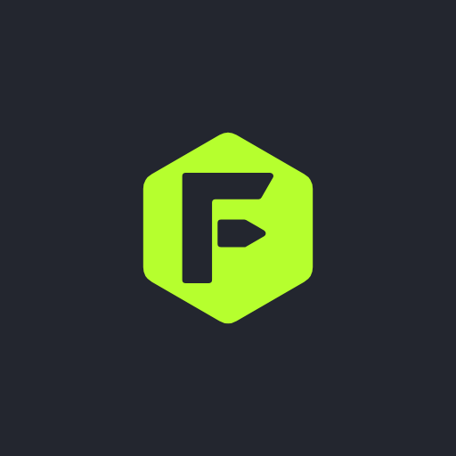

How it is built
Every angle comes from the hexagon itself: 60° for the top arm's cut, 30° for the arrow's tip. Nothing is arbitrary, which is why it feels resolved at any size.
Colourways
Pick by surface. Light surfaces get the ink hexagon with the lime arrow; dark surfaces get the lime hexagon. The single-colour marks take any one colour you give them.
Any colour, any surface
The mark is cut out of the hexagon, so the background shows through the F. A small rule picks the colourway. Across a sweep of 4,096 colours covering the whole RGB range, the worst case is 3.36:1 contrast.
Lockups
Horizontal for headers and documents, stacked for tight or square spaces. The wordmark is outlined, so it needs no font.
Small sizes and app icons
The full mark holds down to 24px. Below that the gutter between stem and arrow closes, so use the one-piece favicon, which is thicker and stays clear at 16px.

Motion
The arrow is the only thing that moves independently, so motion always means flow. Each file's default state is the finished logo, and every one honours prefers-reduced-motion.